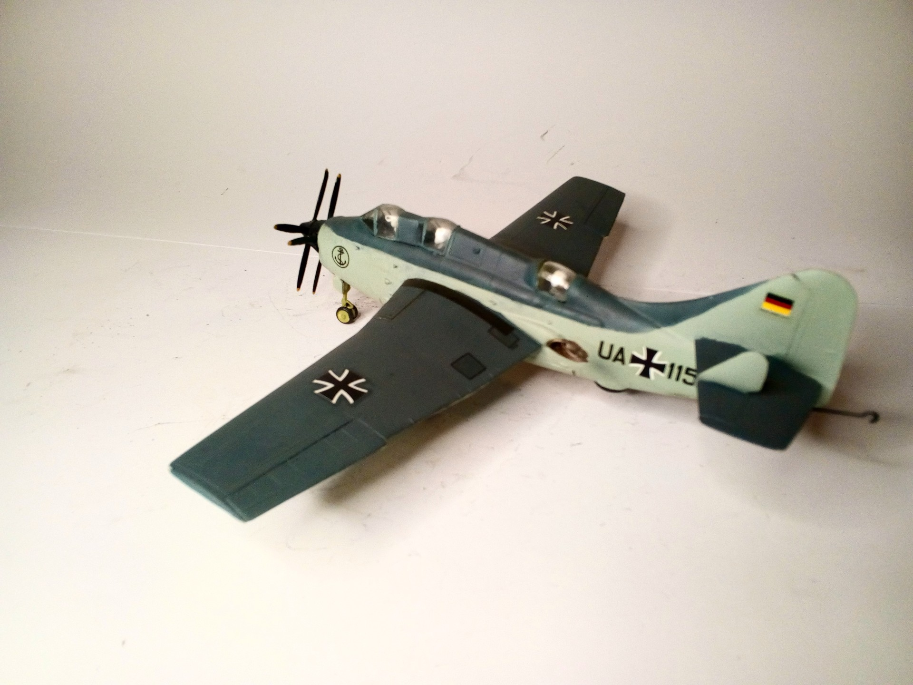
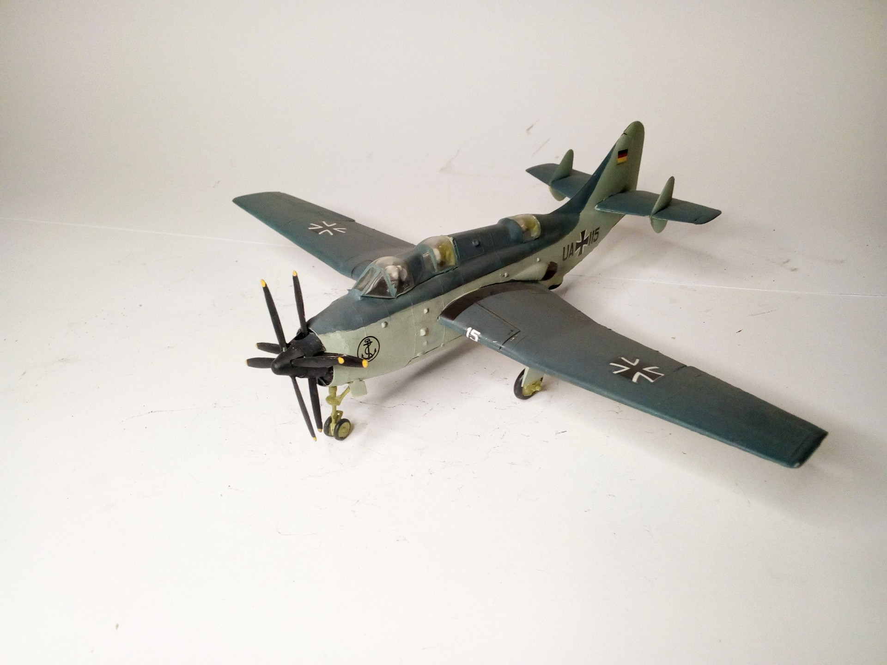

Aerei · scale model archive
Fairey Gannett AS Mk 1
Fairey Gannett AS Mk 1 — Kit: Revell, Scale: 1/72. Marinefliegergeschwader 3 Schleswig 1958 #1/72 #Revell

Photo gallery

English description
Marinefliegergeschwader 3 Schleswig 1958
#1/72 #Revell
Descrizione italiana
Marinefliegergeschwader 3 Schleswig 1958.